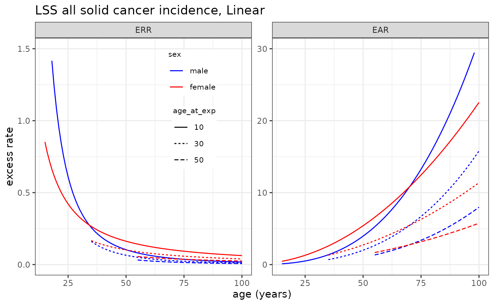

Using/Specifying Risk Models
CanEpiRisk_Models.RmdOverview
A risk model used for risk calculations with CanEpiRisk
package may be a predefined model from either LSS mortality risk model
object (LSS_mortality) or LSS cancer incidence model object
(LSS_mortality). Otherwise, the user can specify any risk
model by a list object with a certain format.
(1) Predefined Risk Models
ERR and EAR risk models for cancer mortality and incidence derived
from recent Life Span Study of Japanese atomic-bomb studies are
available in predefined objects; LSS_mortality and
LSS_incidence. Each risk model for an endpoint (i.e., a
site-specific cancer incidence or mortality) is a list object which
contains a vector of parameter estimates para, a matrix of
variance-covariance matrix of parameter estimates var and a
function to calculate the risk f.
# Mortality
names(LSS_mortality) # Sites for which LSS mortality risk models are available
#> [1] "allsolid" "esophagus" "stomach" "colon" "liver" "lung"
#> [7] "bladder" "breast" "leukaemia"
names(LSS_mortality$allsolid) # Available dose response models
#> [1] "L" "LQ"
LSS_mortality$allsolid$L$err # Linear ERR model for all solid cancer motality
#> $para
#> [1] -0.861334 -0.346062 -0.857491 0.344098
#>
#> $var
#> colon10 ew30 lage70 msex
#> 1 0.014180600 0.00333207 0.01639360 -0.000677273
#> 2 0.003332070 0.00662021 -0.01588550 -0.001016880
#> 3 0.016393600 -0.01588550 0.17911000 0.003545970
#> 4 -0.000677273 -0.00101688 0.00354597 0.007714090
#>
#> $f
#> function (beta, data, lag=5) {
#> exp(beta[1])*data$dose * exp(beta[2] * (data$agex - 30)/10 + beta[3] * log(data$age/70)) *
#> (1 + c(-1, 1)[data$sex] * beta[4]) * (data$age - data$agex >= lag )
#> }
#> <bytecode: 0x55e012678fe0>
#> <environment: 0x55e012676090>
LSS_mortality$allsolid$L$ear # Linear EAR model for all solid cancer motality
#> $para
#> [1] -5.9371100 -0.2134750 3.3845100 0.0676994
#>
#> $var
#> colon10 ew30 lage70 msex
#> 32 0.01417250 0.00242883 0.01582030 -0.00474069
#> 33 0.00242883 0.00512198 -0.01226210 -0.00002250
#> 34 0.01582030 -0.01226210 0.13388100 -0.00584042
#> 35 -0.00474069 -0.00002250 -0.00584042 0.00931054
#>
#> $f
#> function (beta, data, lag=5) {
#> exp(beta[1])*data$dose * exp(beta[2] * (data$agex - 30)/10 + beta[3] * log(data$age/70)) *
#> (1 + c(-1, 1)[data$sex] * beta[4]) * (data$age - data$agex >= lag )
#> }
#> <bytecode: 0x55e0126793a8>
#> <environment: 0x55e012676090>
LSS_mortality$leukaemia$LQ$err # Linear-quadratic ERR model for leukaemia motality
#> $para
#> bm_dose bm_dosesq lage55
#> 1.379118 1.328138 -1.634167
#>
#> $var
#> bm_dose bm_dosesq lage55
#> bm_dose 0.511572695 -0.16656731 -0.005417054
#> bm_dosesq -0.166567310 0.15938148 0.031442880
#> lage55 -0.005417054 0.03144288 0.146357021
#>
#> $f
#> function( beta, data, lag=2 ){
#> tsx <- data$age-data$agex
#> ( beta[1]*data$dose + beta[2]*data$dose^2) *
#> exp( beta[3]*log(data$age/55) ) * (data$age - data$agex >= lag )
#> }
LSS_mortality$lung$L$err # Linear EAR model for lung cancer motality
#> $para
#> [1] -0.3123940 -0.0674953 0.1087770 0.4832490
#>
#> $var
#> colon10 ew30 lage70 msex
#> 21 0.032047300 -0.000480852 -0.006232080 0.002104700
#> 22 -0.000480852 0.024757400 -0.100574000 -0.000947684
#> 23 -0.006232080 -0.100574000 1.553010000 -0.000694346
#> 24 0.002104700 -0.000947684 -0.000694346 0.022580600
#>
#> $f
#> function (beta, data, lag=5) {
#> exp(beta[1])*data$dose * exp(beta[2] * (data$agex - 30)/10 + beta[3] * log(data$age/70)) *
#> (1 + c(-1, 1)[data$sex] * beta[4]) * (data$age - data$agex >= lag )
#> }
#> <bytecode: 0x55e0126b3e00>
#> <environment: 0x55e0126b4b90>
# Plotting LSS all solid cancer mortality risk model
plot_riskmodel( rm=LSS_mortality$allsolid$L, title="LSS all solid cancer mortality, Linear", leg_pos=c(0.4, 0.95) )
# Incidence
names(LSS_incidence) # Sites for which LSS incidence risk models are available
#> [1] "allsolid" "leukaemia" "esophagus" "stomach" "colon" "liver"
#> [7] "lung" "prostate" "pancreas" "bladder" "breast" "thyroid"
#> [13] "brainCNS"
names(LSS_incidence$allsolid) # Available dose response models
#> [1] "L" "LQ"
LSS_incidence$allsolid$L$err # Linear ERR model for all solid cancer incidence
#> $para
#> sexMale:dgy sexFemale:dgy lage70:sexMale lage70:sexFemale
#> 0.2731771 0.6398698 -2.5640146 -1.3783097
#> e30 hidoseTRUE
#> -0.2330051 -0.2761703
#>
#> $var
#> sexMale:dgy sexFemale:dgy lage70:sexMale lage70:sexFemale
#> sexMale:dgy 0.0021308300 0.000526540 0.0119066187 -0.0015145731
#> sexFemale:dgy 0.0005265400 0.003944061 -0.0019637448 0.0057283111
#> lage70:sexMale 0.0119066187 -0.001963745 0.2072085784 0.0090031922
#> lage70:sexFemale -0.0015145731 0.005728311 0.0090031922 0.0708425868
#> e30 0.0008522796 0.001378741 -0.0046736366 -0.0053350872
#> hidoseTRUE -0.0012531791 -0.002191058 -0.0002535854 0.0004417784
#> e30 hidoseTRUE
#> sexMale:dgy 0.0008522796 -0.0012531791
#> sexFemale:dgy 0.0013787414 -0.0021910581
#> lage70:sexMale -0.0046736366 -0.0002535854
#> lage70:sexFemale -0.0053350872 0.0004417784
#> e30 0.0028724210 -0.0003010759
#> hidoseTRUE -0.0003010759 0.0373994998
#>
#> $f
#> function( beta, data, lag=5 ){ exp( beta[5]*(data$agex-30)/10 ) *
#> ( (data$sex==1)*(beta[1]*data$dose) * exp(beta[3]*log(data$age/70))
#> + (data$sex==2)*(beta[2]*data$dose) * exp(beta[4]*log(data$age/70)) ) * (data$age - data$agex >= lag )
#> }
LSS_incidence$allsolid$L$ear # Linear EAR model for all solid cancer incidence
#> $para
#> sexMale:dgy sexFemale:dgy lage70:sexMale lage70:sexFemale
#> 0.005444272 0.005452228 2.985824086 2.062337914
#> e30 hidoseTRUE
#> -0.341867615 -0.288156287
#>
#> $var
#> sexMale:dgy sexFemale:dgy lage70:sexMale lage70:sexFemale
#> sexMale:dgy 6.778181e-07 7.736991e-08 1.725090e-04 -2.136372e-05
#> sexFemale:dgy 7.736991e-08 2.718133e-07 -2.228262e-05 4.024986e-05
#> lage70:sexMale 1.725090e-04 -2.228262e-05 1.479262e-01 8.657096e-03
#> lage70:sexFemale -2.136372e-05 4.024986e-05 8.657096e-03 5.508209e-02
#> e30 1.329393e-05 1.258732e-05 -5.007734e-03 -4.483048e-03
#> hidoseTRUE -2.347392e-05 -1.818335e-05 -4.514195e-04 -7.435074e-06
#> e30 hidoseTRUE
#> sexMale:dgy 1.329393e-05 -2.347392e-05
#> sexFemale:dgy 1.258732e-05 -1.818335e-05
#> lage70:sexMale -5.007734e-03 -4.514195e-04
#> lage70:sexFemale -4.483048e-03 -7.435074e-06
#> e30 2.655737e-03 -2.652011e-04
#> hidoseTRUE -2.652011e-04 3.709808e-02
#>
#> $f
#> function( beta, data, lag=5 ){ exp( beta[5]*(data$agex-30)/10 ) *
#> ( (data$sex==1)*(beta[1]*data$dose) * exp(beta[3]*log(data$age/70))
#> + (data$sex==2)*(beta[2]*data$dose) * exp(beta[4]*log(data$age/70)) ) * (data$age - data$agex >= lag )
#> }
# Plotting LSS all solid cancer incidence risk model
plot_riskmodel( rm=LSS_incidence$allsolid$L, title="LSS all solid cancer incidence, Linear", leg_pos=c(0.4, 0.95) )
#> Warning: Removed 5 rows containing missing values or values outside the scale range
#> (`geom_line()`).
(2) Specifying Risk Models
A risk model may be specified by a list object which has the same
structure as in an LSS risk model object (LSS_mortality or
LSS_incidence). As an example, the risk models derived from
the INWORKS cohort for mortality from all solid cancer (Richardson et
al., 2015) and from leukaemia (Leuraud et al., 2015) can be specified as
follows. Note that the uncertainty in the only risk model parameter
(ERR/Gy) is specified by the 95% confidence interval, instead of the
variance-covariance matrix in the LSS risk models objects.
INWORKS_mortality <- NULL
INWORKS_mortality$allsolid <- NULL
INWORKS_mortality$allsolid$L <- list(
err=list(
para=c(0.47), # ERR/Gy=0.47 (90% CI: 0.18,0.79)
ci= c(0.1392403, 0.8521128), # 95% CI coverted from 90%CI by Weibull approx.
f=function (beta, data, lag=10) {
beta[1] * data$dose * (data$age - data$agex >= lag )
}
),
ear=list( # dummry object
para=c(4.8/10000),
ci= c(0.1068428, 12.5703871)/10000,
f=function (beta, data, lag=10) {
beta[1] * data$dose * (data$age - data$agex >= lag )
}
)
)
INWORKS_mortality$leukaemia$L <- list(
err=list(
para=c(2.96), # ERR/Gy=2.96 (90% CI: 1.17, 5.21)
ci= c(0.8664, 5.6940),
f=function (beta, data, lag=2) {
beta[1] * data$dose * (data$age - data$agex >= lag )
}
),
ear=list( # dummry object
para=c(2.25/10000),
ci=c(0.5064054, 4.4914628)/10000,
f=function (beta, data, lag=2) {
beta[1] * data$dose * (data$age - data$agex >= lag )
}
)
)
INWORKS_mortality
#> $allsolid
#> $allsolid$L
#> $allsolid$L$err
#> $allsolid$L$err$para
#> [1] 0.47
#>
#> $allsolid$L$err$ci
#> [1] 0.1392403 0.8521128
#>
#> $allsolid$L$err$f
#> function (beta, data, lag = 10)
#> {
#> beta[1] * data$dose * (data$age - data$agex >= lag)
#> }
#>
#>
#> $allsolid$L$ear
#> $allsolid$L$ear$para
#> [1] 0.00048
#>
#> $allsolid$L$ear$ci
#> [1] 1.068428e-05 1.257039e-03
#>
#> $allsolid$L$ear$f
#> function (beta, data, lag = 10)
#> {
#> beta[1] * data$dose * (data$age - data$agex >= lag)
#> }
#>
#>
#>
#>
#> $leukaemia
#> $leukaemia$L
#> $leukaemia$L$err
#> $leukaemia$L$err$para
#> [1] 2.96
#>
#> $leukaemia$L$err$ci
#> [1] 0.8664 5.6940
#>
#> $leukaemia$L$err$f
#> function (beta, data, lag = 2)
#> {
#> beta[1] * data$dose * (data$age - data$agex >= lag)
#> }
#>
#>
#> $leukaemia$L$ear
#> $leukaemia$L$ear$para
#> [1] 0.000225
#>
#> $leukaemia$L$ear$ci
#> [1] 5.064054e-05 4.491463e-04
#>
#> $leukaemia$L$ear$f
#> function (beta, data, lag = 2)
#> {
#> beta[1] * data$dose * (data$age - data$agex >= lag)
#> }
# Plotting solid cancer mortality risk, male,
# 6.7(100/15)mGy at ages 30-45, followed up to age 60, LSS-L, LSS-LQ and INWORKS models
exp4 <- list( agex=30:44+0.5, doseGy=rep(0.1/15,15), sex=1 ) # Exposure scenario
opt4_err <- list( maxage=90, err_wgt=1 ) # for ERR transfer
opt4_ear <- list( maxage=90, err_wgt=0 ) # for EAR transfer
lss_err_L <- Comp_Exrisk( exposure=exp4, riskmodel=LSS_mortality$allsolid$L, option=opt4_err )
lss_err_LQ <- Comp_Exrisk( exposure=exp4, riskmodel=LSS_mortality$allsolid$LQ, option=opt4_err )
inw_err_L <- Comp_Exrisk( exposure=exp4, riskmodel=INWORKS_mortality$allsolid$L, option=opt4_err )
lss_ear_L <- Comp_Exrisk( exposure=exp4, riskmodel=LSS_mortality$allsolid$L, option=opt4_ear, per=10^4 )
lss_ear_LQ <- Comp_Exrisk( exposure=exp4, riskmodel=LSS_mortality$allsolid$LQ, option=opt4_ear, per=10^4 )
inw_ear_L <- Comp_Exrisk( exposure=exp4, riskmodel=INWORKS_mortality$allsolid$L, option=opt4_ear, per=10^4 )
plot( c(30,90), c(0,0.1), type="n", ylab="Excess relative rate", xlab="age (years)" )
lines( lss_err_L, lty=2 )
lines( lss_err_LQ, lty=3 )
lines( inw_err_L )References
Richardson, D.B., E. Cardis, R.D. Daniels et al. Risk of cancer from occupational exposure to ionising radiation: retrospective cohort study of workers in France, the United Kingdom, and the United States (INWORKS). BMJ 351: h5359 (2015).
Richardson, D.B., K. Leuraud, D. Laurier et al. Cancer mortality after low dose exposure to ionising radiation in workers in France, the United Kingdom, and the United States (INWORKS): cohort study. BMJ 382: e074520 (2023).
Leuraud, K., D.B. Richardson, E. Cardis et al. Ionising radiation and risk of death from leukaemia and lymphoma in radiation-monitored workers (INWORKS): an international cohort study. Lancet Haematol 2(7): e276-281 (2015).